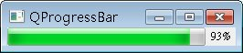

QProgressBar常用來顯示目前的工作進度，例如程式安裝、檔案複製、下載等，以下這個範例使用QTimer來模擬執行進度，並使用QProgressBar來顯示執行進度。
#ifndef PROGRESSBAR_H
#define PROGRESSBAR_H
#include <QProgressBar>
class ProgressBar : public QProgressBar {
Q_OBJECT
public:
ProgressBar(QWidget *parent=0) : QProgressBar(parent) {}
public slots:
void stepOne();
};
#endif
stepOne()每執行一次，會根據目前的進度加一，如果加到QProgressBar最大值，就從最小值重新開始：
#include "ProgressBar.h"
void ProgressBar::stepOne() {
if(this->value() + 1 <= this->maximum()) {
this->setValue(this->value() + 1);
}
else {
this->setValue(this->minimum());
}
}
程式中將使用QTimer的timerout()來連接stepOne()，每500毫秒進行一個進度：
#include "ProgressBar.h"
#include <QApplication>
#include <QTimer>
int main(int argc, char *argv[]) {
QApplication app(argc, argv);
ProgressBar *progressBar = new ProgressBar;
progressBar->setWindowTitle("QProgressBar");
progressBar->resize(250, 20);
progressBar->setMaximum(100);
progressBar->setMinimum(0);
progressBar->setValue(0);
QTimer *timer = new QTimer;
timer->start(500);
QObject::connect(timer, SIGNAL(timeout()), progressBar, SLOT(stepOne()));
progressBar->show();
return app.exec();
}
執行結果畫面如下所示：

|